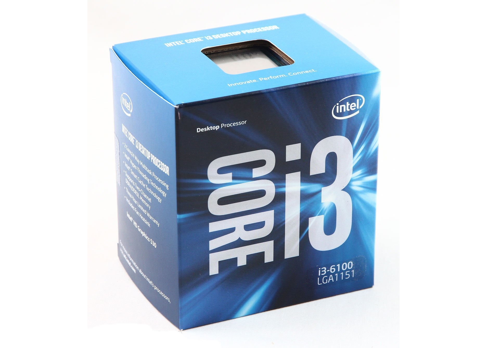

Core i3
Позиционируются как процессоры начального и среднего уровня цены и производительности. В новом модельном ряду призваны заменить устаревшие Core 2 Duo на архитектуре Intel Core 2.
Имеют встроенный графический процессор и встроенный контроллер памяти. Процессоры Core i3 соединяются с чипсетом через шину DMI, DMI 2.0 или DMI 3.0. Поддерживают инструкции — MMX, SSE, SSE2, SSE3, SSSE3, SSE4.1, SSE4.2, AES, AVX, AVX2. Поддерживают технологии — Enhanced Intel SpeedStep Technology (EIST), Intel 64, XD bit (реализация технологии NX bit), Intel VT-x, Smart-Cache, а также технологию Hyper-threading, из-за чего операционная система распознаёт данный двухъядерный процессор как четырёхъядерный.
Не поддерживают технологию Turbo Boost (автоматический разгон процессора под нагрузкой).
Первые процессоры Core i3 были выпущены 7 января 2010 года. Первые представители семейства Core i3 на основе ядра Clarkdale микроархитектуры Nehalem имели интегрированный GPU и два процессорных ядра. Процессоры Core i3-3xxM на основе ядра Arrandale являлись мобильными версиями процессоров Clarkdale для настольных систем.
Второе поколение процессоров Core i3 было представлено 20 февраля 2011 года. Процессоры базировались на основе микроархитектуры Sandy Bridge. Нумерация — i3-2xxx.
Выход третьего поколения Core i3 на базе микроархитектуры Ivy Bridge произошёл в апреле 2012 года. Нумерация — i3-3xxx.
В сентябре 2013[1] были представлены процессоры Core i3 четвёртого поколения Haswell. Нумерация i3-4xxx. Процессоры Core i3-43xx имеют увеличенный объём L3-кеш — 4 Мбайт, процессоры Core i3-41xx имеют 3 Мбайт L3-кеш. В моделях Core i3-43xx присутствует графическое ядро HD Graphics 4600 с 20 исполнительными устройствами. В Core i3-41xx используется графическое ядро HD Graphics 4400, отличающееся наличием 16 исполнительных устройств. Новое поколение Core i3 получило полную поддержку тех же систем команд, что и процессоры серий Core i5 и Core i7.